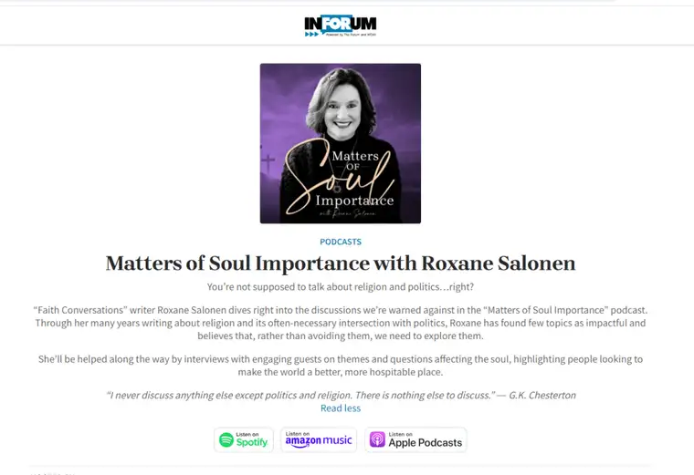

I’ve already shared about my new adventure dipping into the podcast pool here. But I also wanted to find a way to log episodes for this fun new thing in one place. So, this is the post where I’ll hold them all.
The first episode launched the first Friday of January (Jan. 5), and features my interview with fellow Forum faith columnist Pastor Devlyn Brooks, who attempts to answer the question: Can Jesus and journalism co-exist?
Initially, I thought I’d need to log each episode, but podcasts are nice in the way they are kept all in one place; therefore, you’ll find every episode in one place, and nearly everywhere podcasts can be found.
Here are the platforms on which “Matters of Soul Importance” are found so far:
If you like what you hear, please consider offering a review or a star rating. I do this with no compensation other than feedback and reviews. Here’s a short tutorial on how to do that, if you have never done it before:
How to leave a review for your favorite podcasts: A complete guide
Glad to have you along on this journey with me. And please share any thoughts you have using the comments form. I’m open to suggestions and responses of any kind.
Until next time, don’t lose sight of the light!
